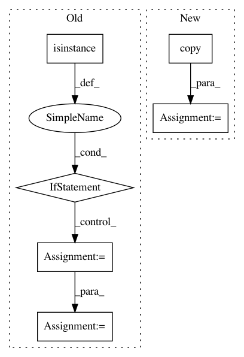

5d8b81e16143d6eea9e86a586fe737854c03c772,linearmodels/tests/panel/test_pooled_ols.py,,test_two_way_clustering,#Any#,216
Before Change
entity_clusters = pd.DataFrame(mod.dependent.entity_ids, index=mod.dependent.dataframe.index)
if isinstance(data.c, np.ndarray):
clusters = data.c[0]
elif isinstance(data.c, pd.Panel):
clusters = data.c.iloc[0].values
else:
clusters = data.c[0].values
clusters = clusters.T
retain = mod.not_null
clusters = clusters.ravel()[retain, None]
clusters = pd.DataFrame(clusters, mod.dependent.dataframe.index, columns=["ids"])
clusters["entity_clusters"] = entity_clusters
After Change
y = PanelData(data.y)
entity_clusters = pd.DataFrame(y.entity_ids, index=y.index)
vc1 = PanelData(data.vc1)
clusters = vc1.copy()
clusters.dataframe["var.cluster.entity"] = entity_clusters
clusters._frame = clusters._frame.astype(np.int64)
res = mod.fit(cov_type="clustered", clusters=clusters)
y = mod.dependent.dataframe.copy()
x = mod.exog.dataframe.copy()
In pattern: SUPERPATTERN
Frequency: 3
Non-data size: 6
Instances
Project Name: bashtage/linearmodels
Commit Name: 5d8b81e16143d6eea9e86a586fe737854c03c772
Time: 2017-04-07
Author: kevin.k.sheppard@gmail.com
File Name: linearmodels/tests/panel/test_pooled_ols.py
Class Name:
Method Name: test_two_way_clustering
Project Name: autoreject/autoreject
Commit Name: 95268e53c4966ec5cad5d87580e664504b31c5a7
Time: 2016-10-05
Author: mainak.jas@telecom-paristech.fr
File Name: autoreject/utils.py
Class Name:
Method Name: clean_by_interp
Project Name: nilearn/nilearn
Commit Name: b5d529ade954f627b62dd33a94313c5d58cb71c8
Time: 2015-03-18
Author: abraham.alexandre@gmail.com
File Name: nilearn/_utils/niimg.py
Class Name:
Method Name: new_img_like